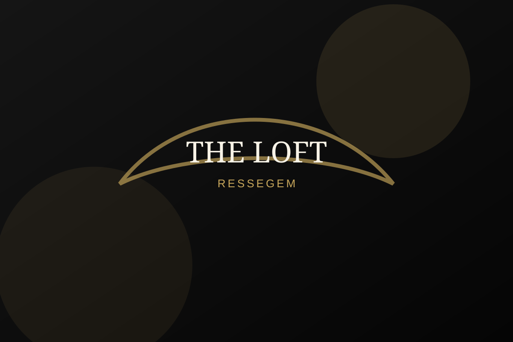
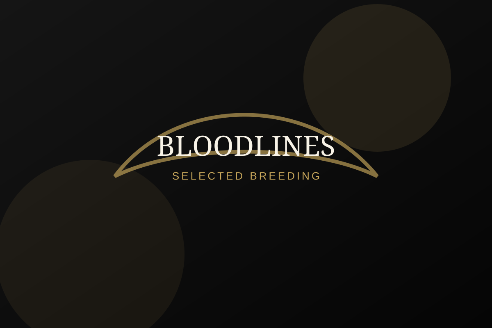
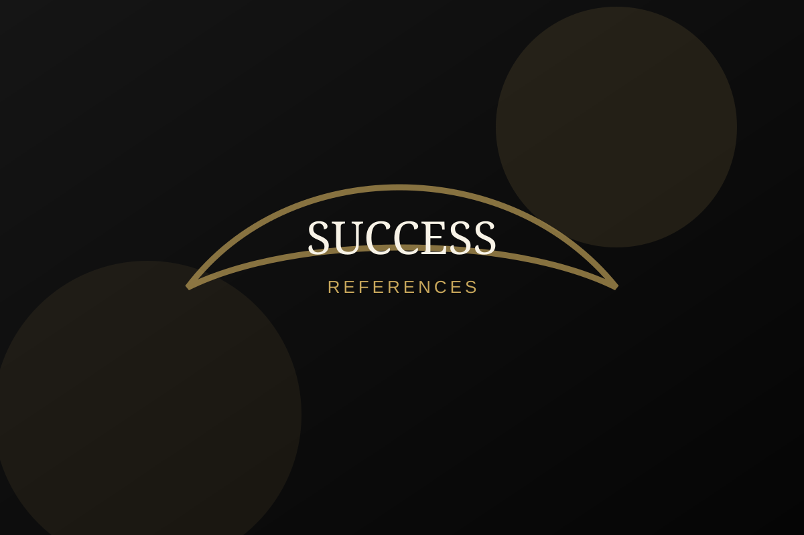

Breeding Excellence
Breeding Excellence
Ressegem · Belgium
Breeding Excellence. Een luxueus kweekstation met focus op sterke bloedlijnen, karakter en referenties.
About the loft
RVH Pigeons staat voor een professionele aanpak van kweek, selectie en referenties.

Een dynamische opzet. Later voeg je duiven toe in data/pigeons.json.
Referenties van liefhebbers die met RVH-duiven spelen.
Klik op een afbeelding om de lightbox te testen.

